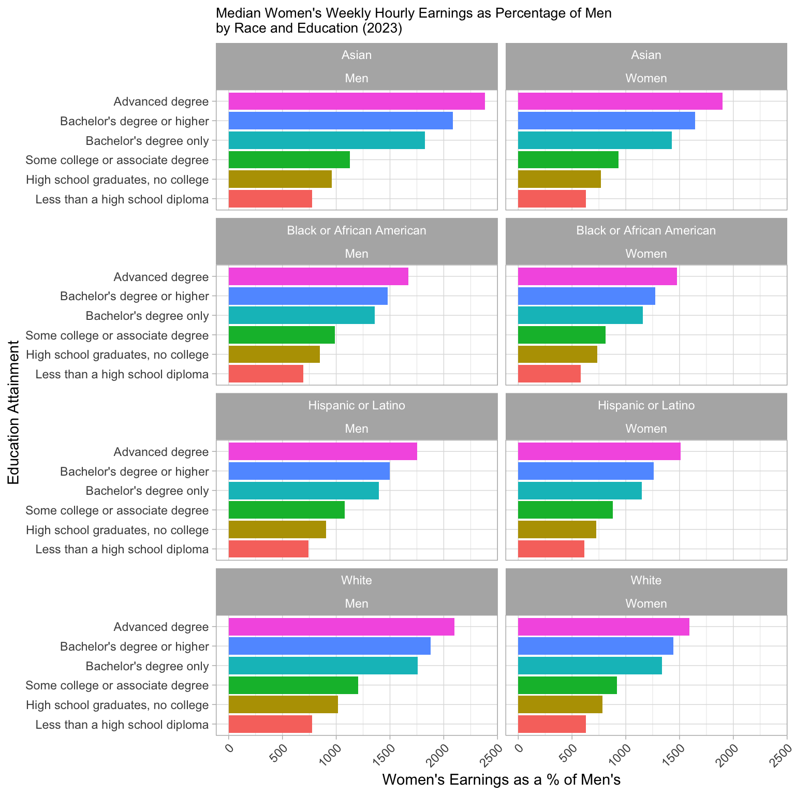

say something like the most important thing is the occupation difference
start with the Total Earnings by Gender and Occupation Group plot? (hard plot 1)
is the box plot relevant or am i just trying to get another plot
i like the clevland dot plot / bar chart under it showing the men and women differences (hard plot 2)
show some combo of the most popular jobs by imbalance / most popular jobs by gender
this might be something we just show the table for, feel interesting for the reader
we can also skip completely
end with the scatter plot that shows jobs with the 45 degree line in the middle (hard plot 3)
another large finding is child and marital status
show the overall marital one first (hard plot 4)
Women’s Median Weekly Earnings as Percentage of Men’s Earnings by Children Status next
need to be careful about this one, its not so clear cut (hard plot 5)
then the one that shows the percent of day breakdown (hard plot 6)
comment on data we have over time
time series with race, education status? (make those breaks in the series for recessions also)
maybe map plot if we dont do the one below?
still need to add an interactive component – maybe something like this showing wages over time? i still havent really looked much how d3 works, so may need to do something else https://nwlc.org/resource/wage-gap-state-by-state/
hard plot = we should def include these
Code
# Add libraries and read in datalibrary(readr)library(dplyr)
Attaching package: 'dplyr'
The following objects are masked from 'package:stats':
filter, lag
The following objects are masked from 'package:base':
intersect, setdiff, setequal, union
# Load necessary librarieslibrary(dplyr)library(ggplot2)# Assuming data is loaded into MedianWeeklyEarningsByOccupationdata <- MedianWeeklyEarningsByOccupation# Clean data by removing NA values for men's and women's earningsdata_clean <- data %>%filter(!is.na(men_median_weekly_earnings) &!is.na(women_median_weekly_earnings)) %>%mutate(wage_gap = (women_median_weekly_earnings / men_median_weekly_earnings) *100 )# Top 15 Occupations by Number of Women Workers (sorted by number of workers)top_15_women <- data_clean %>%arrange(desc(women_number_of_workers)) %>%head(15) %>%mutate(occupation =factor(occupation, levels =rev(occupation))) %>%select(occupation, women_number_of_workers, wage_gap)# Top 15 Occupations by Number of Men Workers (sorted by number of workers)top_15_men <- data_clean %>%arrange(desc(men_number_of_workers)) %>%head(15) %>%mutate(occupation =factor(occupation, levels =rev(occupation))) %>%select(occupation, men_number_of_workers, wage_gap)# Plot for Top 15 Occupations by Women Workers (sorted by number of workers)p1 <-ggplot(top_15_women, aes(x = occupation, y = wage_gap, fill = wage_gap)) +geom_bar(stat ="identity") +geom_text(aes(label =paste0(round(wage_gap, 1), "%")), vjust =0.5, color ="white", fontface ="bold") +# Add labels inside barscoord_flip() +# Flip the axes for readabilitylabs(title ="Wage Gap for Top 15 Occupations by Number of Women Workers",x ="Occupation",y ="Wage Gap (%)" ) +scale_fill_gradient(low ="red", high ="blue") +# Red for lower wage gap, Green for higher wage gaptheme_minimal() +theme(axis.text.x =element_text(angle =45, hjust =1)) # Rotate x-axis labels for better readability# Plot for Top 15 Occupations by Men Workers (sorted by number of workers)p2 <-ggplot(top_15_men, aes(x = occupation, y = wage_gap, fill = wage_gap)) +geom_bar(stat ="identity") +geom_text(aes(label =paste0(round(wage_gap, 1), "%")), vjust =0.5, color ="white", fontface ="bold") +# Add labels inside barscoord_flip() +# Flip the axes for readabilitylabs(title ="Wage Gap for Top 15 Occupations by Number of Men Workers",x ="Occupation",y ="Wage Gap (%)" ) +scale_fill_gradient(low ="red", high ="blue") +# Red for lower wage gap, Green for higher wage gaptheme_minimal() +theme(axis.text.x =element_text(angle =45, hjust =1)) # Rotate x-axis labels for better readability# Print both plotsp1
Code
p2
Code
# Load necessary librarieslibrary(dplyr)library(ggplot2)# Assuming data is loaded into MedianWeeklyEarningsByOccupationdata <- MedianWeeklyEarningsByOccupation# Clean data by removing NA values for men's and women's earningsdata_clean <- data %>%filter(!is.na(men_median_weekly_earnings) &!is.na(women_median_weekly_earnings)) %>%mutate(wage_gap = (women_median_weekly_earnings / men_median_weekly_earnings) *100,women_men_ratio = women_number_of_workers / men_number_of_workers, # Women-to-Men Ratiomen_women_ratio = men_number_of_workers / women_number_of_workers # Men-to-Women Ratio )# Top 15 Occupations with the Highest Women-to-Men Workers Ratio (sorted by ratio)top_15_women_imbalance <- data_clean %>%arrange(desc(women_men_ratio)) %>%head(15) %>%mutate(occupation =factor(occupation, levels =rev(occupation))) %>%select(occupation, women_men_ratio, wage_gap)# Top 15 Occupations with the Highest Men-to-Women Workers Ratio (sorted by ratio)top_15_men_imbalance <- data_clean %>%arrange(desc(men_women_ratio)) %>%head(15) %>%mutate(occupation =factor(occupation, levels =rev(occupation))) %>%select(occupation, men_women_ratio, wage_gap)# Plot for Top 15 Occupations with the Highest Women-to-Men Workers Ratio (sorted by ratio)p1 <-ggplot(top_15_women_imbalance, aes(x = occupation, y = wage_gap, fill = wage_gap)) +geom_bar(stat ="identity") +geom_text(aes(label =paste0(round(wage_gap, 1), "%")), vjust =0.5, color ="white", fontface ="bold") +# Add labels inside barscoord_flip() +# Flip the axes for readabilitylabs(title ="Wage Gap for Top 15 Occupations with the Highest Women-to-Men Workers Ratio",x ="Occupation",y ="Wage Gap (%)" ) +scale_fill_gradient(low ="red", high ="blue") +# Red for lower wage gap, Green for higher wage gaptheme_minimal() +theme(axis.text.x =element_text(angle =45, hjust =1)) # Rotate x-axis labels for better readability# Plot for Top 15 Occupations with the Highest Men-to-Women Workers Ratio (sorted by ratio)p2 <-ggplot(top_15_men_imbalance, aes(x = occupation, y = wage_gap, fill = wage_gap)) +geom_bar(stat ="identity") +geom_text(aes(label =paste0(round(wage_gap, 1), "%")), vjust =0.5, color ="white", fontface ="bold") +# Add labels inside barscoord_flip() +# Flip the axes for readabilitylabs(title ="Wage Gap for Top 15 Occupations with the Highest Men-to-Women Workers Ratio",x ="Occupation",y ="Wage Gap (%)" ) +scale_fill_gradient(low ="red", high ="blue") +# Red for lower wage gap, Green for higher wage gaptheme_minimal() +theme(axis.text.x =element_text(angle =45, hjust =1)) # Rotate x-axis labels for better readability# Print both plotsp1
Code
p2
Code
# Load necessary librarieslibrary(ggplot2)library(dplyr)# Assuming you have a dataset like MedianWeeklyEarningsByOccupationdata <- MedianWeeklyEarningsByOccupation# Clean data by removing rows with NA values for median earningsdata_clean <- data %>%filter(!is.na(men_median_weekly_earnings) &!is.na(women_median_weekly_earnings))# Convert data to long format for ggplot (necessary for making boxplots)data_long <- data_clean %>%select(occupation_group_major, occupation, men_median_weekly_earnings, women_median_weekly_earnings) %>%pivot_longer(cols =c(men_median_weekly_earnings, women_median_weekly_earnings),names_to ="gender", values_to ="median_weekly_earnings") %>%mutate(gender =ifelse(gender =="men_median_weekly_earnings", "Men", "Women"))# Identify outliers (values outside the whiskers)calculate_outliers <-function(x) {# Calculate Q1, Q3, and IQR Q1 <-quantile(x, 0.25, na.rm =TRUE) Q3 <-quantile(x, 0.75, na.rm =TRUE) IQR <- Q3 - Q1# Define lower and upper bounds for outliers lower_bound <- Q1 -1.5* IQR upper_bound <- Q3 +1.5* IQR# Identify outliers outliers <- x[x < lower_bound | x > upper_bound]return(outliers)}# Create a new column to mark outliers for labelingoutlier_data <- data_long %>%group_by(gender) %>%mutate(is_outlier = median_weekly_earnings %in%calculate_outliers(median_weekly_earnings))# Create boxplot of median weekly earnings for Men and Women with outlier labels (by occupation)ggplot(data_long, aes(x = gender, y = median_weekly_earnings, fill = gender)) +geom_boxplot() +geom_text(data = outlier_data %>%filter(is_outlier), aes(label = occupation),position =position_jitter(width =0.1), # Slightly jitter outlier labels to avoid overlapcolor ="black", fontface ="bold", size =3) +labs(title ="Distribution of Median Weekly Earnings by Gender with Outliers Labeled (by Occupation)",x ="Gender",y ="Median Weekly Earnings (USD)" ) +scale_fill_manual(values =c("blue", "pink")) +# Customize boxplot colorstheme_minimal() +theme(axis.text.x =element_text(size =12),axis.text.y =element_text(size =12),axis.title.x =element_text(size =14),axis.title.y =element_text(size =14))
Code
library(plotly)
Attaching package: 'plotly'
The following object is masked from 'package:ggplot2':
last_plot
The following object is masked from 'package:stats':
filter
The following object is masked from 'package:graphics':
layout
Code
library(dplyr)# Clean the datadata_clean <- MedianWeeklyEarningsByOccupation |>filter(total_number_of_workers >=15, !is.na(men_median_weekly_earnings) &!is.na(women_median_weekly_earnings))# Create the scatter plot using plot_lyplot_ly(data = data_clean, x =~men_median_weekly_earnings, y =~women_median_weekly_earnings, type ='scatter', mode ='markers', text =~occupation, # Hover text with occupation nameshoverinfo ='text', # Show only occupation on hovercolor =~occupation_group_major, # Color by occupation groupcolors =c("red", "blue", "green", "orange"), # Specify colors for groupsmarker =list(size =10, opacity =0.7)) %>%layout(title ="Men vs. Women Median Weekly Earnings by Occupation",xaxis =list(title ="Men's Median Weekly Earnings ($)"),yaxis =list(title ="Women's Median Weekly Earnings ($)"),shapes =list(# Add 45-degree line (y = x) as a referencelist(type ="line", x0 =500, x1 =max(data_clean$men_median_weekly_earnings, na.rm =TRUE), y0 =500, y1 =max(data_clean$women_median_weekly_earnings, na.rm =TRUE), line =list(color ="black", width =2, dash ="dot") ) ),annotations =list(# Add annotation outside the chartlist(x =1.1, # Position outside the plot area (right side)y = .05, # Position vertically at the top of the chartxref ="paper", # Use 'paper' to position relative to plot areayref ="paper", # Use 'paper' to position relative to plot areatext ="---- Men Median Pay = Women Median Pay", showarrow =TRUE,arrowhead =2, ax =20, ay =0, # Adjust arrow direction to point to the linefont =list(size =12, color ="black") ) ) )
Code
library(dplyr)library(tidyr)library(ggplot2)data_long <- MedianWeeklyEarningsByOccupationAggregate |> dplyr::select(occupation, men_median_weekly_earnings, women_median_weekly_earnings) |>pivot_longer(cols =c(men_median_weekly_earnings, women_median_weekly_earnings), names_to ="gender", values_to ="median_weekly_earnings") |>mutate(gender =factor(gender, levels =c("men_median_weekly_earnings", "women_median_weekly_earnings"), labels =c("Men", "Women")))# Create the Cleveland dot plot with occupation descriptions on the y-axis and earnings on the x-axisggplot(data_long, aes(x = median_weekly_earnings, y = occupation, color = gender)) +geom_point(size =2) +# Use points to create the dot plotscale_color_manual(values =c("blue", "pink")) +# Assign colors for men and womenlabs(title ="Median Weekly Earnings by Occupation (Men vs. Women)",x ="Median Weekly Earnings ($)",y ="Occupation",color ="Gender") +theme_minimal() +theme(axis.text.y =element_text(size =8), # Adjust y-axis labels for readabilityaxis.title.x =element_text(size =10), # Optional: adjust the x-axis title sizeaxis.title.y =element_text(size =10), # Optional: adjust the y-axis title sizelegend.position ="top") # Position legend at the top
Code
# Reshape the data to long formatdata_long <- MedianWeeklyEarningsByOccupationAggregate %>% dplyr::select(occupation, men_median_weekly_earnings, women_median_weekly_earnings) %>%gather(key ="gender", value ="median_weekly_earnings", men_median_weekly_earnings, women_median_weekly_earnings) %>%mutate(gender =factor(gender, levels =c("men_median_weekly_earnings", "women_median_weekly_earnings"), labels =c("Men", "Women")))# Create the bar plotggplot(data_long, aes(x = occupation, y = median_weekly_earnings, fill = gender)) +geom_bar(stat ="identity", position =position_dodge(width =0.8), width =0.7) +scale_fill_manual(values =c("blue", "pink")) +# Assign colors for men and womenlabs(title ="Median Weekly Earnings by Occupation (Men vs. Women)",x ="Occupation",y ="Median Weekly Earnings ($)",fill ="Gender") +theme_minimal() +theme(axis.text.x =element_text(angle =90, hjust =1), # Rotate x-axis labels for readabilitylegend.position ="top") +coord_flip()
Code
library(ggplot2)library(dplyr)library(tidyr)# Prepare the datadata_clean <- MedianWeeklyEarningsByOccupation |>filter(total_number_of_workers >=15, !is.na(men_median_weekly_earnings) &!is.na(women_median_weekly_earnings))# Calculate total earnings by multiplying median weekly earnings by the number of workersdata_clean <- data_clean %>%mutate(men_total_earnings = men_median_weekly_earnings * men_number_of_workers,women_total_earnings = women_median_weekly_earnings * women_number_of_workers)# Reshape the data to long format for stackingdata_long <- data_clean %>% dplyr::select(occupation, occupation_group_major, men_total_earnings, women_total_earnings) %>%pivot_longer(cols =c(men_total_earnings, women_total_earnings),names_to ="gender",values_to ="total_earnings") %>%mutate(gender =recode(gender, "men_total_earnings"="Men", "women_total_earnings"="Women"))# Create stacked bar chart with color by major occupation groupggplot(data_long, aes(x = gender, y = total_earnings, fill = occupation_group_major)) +geom_bar(stat ="identity", position ="stack") +labs(title ="Total Earnings by Gender and Occupation Group",x ="Gender",y ="Total Earnings ($)") +scale_fill_brewer(palette ="Set3") +# Use a color palette for different occupation groupstheme_minimal() +theme(legend.position ="right") # Place the legend to the right
Code
# Load necessary librarieslibrary(ggplot2)library(dplyr)# Assuming 'MedianWeeklyEarningsByOccupation' is your data frame, first filter for legal occupationslegal_data <- MedianWeeklyEarningsByOccupation %>%filter(occupation_group =="Legal occupations") %>% dplyr::select(occupation, total_number_of_workers, total_median_weekly_earnings, men_number_of_workers, men_median_weekly_earnings, women_number_of_workers, women_median_weekly_earnings)# Clean the data (remove commas and convert to numeric where needed)legal_data <- legal_data %>%mutate(men_median_weekly_earnings =as.numeric(gsub(",", "", men_median_weekly_earnings)),women_median_weekly_earnings =as.numeric(gsub(",", "", women_median_weekly_earnings)),men_number_of_workers =as.numeric(gsub(",", "", men_number_of_workers)),women_number_of_workers =as.numeric(gsub(",", "", women_number_of_workers)) )# Calculate the pay gap ratio (women's earnings divided by men's earnings)legal_data$pay_gap_ratio <- legal_data$women_median_weekly_earnings / legal_data$men_median_weekly_earnings# Create a plot comparing the pay gap ratio for all occupations, including legal onesggplot(legal_data, aes(x = occupation, y = pay_gap_ratio, fill ="Pay Gap Ratio")) +geom_bar(stat ="identity", width =0.7, fill ="purple") +geom_hline(yintercept =0.77, linetype ="dashed", color ="red", size =1) +# 77% pay gap linelabs(title ="Pay Gap Ratio by Occupation",x ="Occupation",y ="Pay Gap Ratio (Women to Men)",fill ="Pay Gap Ratio") +theme_minimal() +theme(axis.text.x =element_text(angle =90, hjust =1), # Rotate x-axis labels for readabilitylegend.position ="none") +coord_flip() # Flip coordinates for better readability of occupation names
Warning: Using `size` aesthetic for lines was deprecated in ggplot2 3.4.0.
ℹ Please use `linewidth` instead.
Warning: Removed 4 rows containing missing values or values outside the scale range
(`geom_bar()`).
Code
library(ggplot2)library(dplyr)library(stringr)# Reshape the data to long formatdata_long <- MedianWeeklyEarningsByOccupationAggregate %>% dplyr::select(occupation, men_number_of_workers, women_number_of_workers, men_median_weekly_earnings, women_median_weekly_earnings) %>%pivot_longer(cols =c(men_number_of_workers, women_number_of_workers, men_median_weekly_earnings, women_median_weekly_earnings), names_to ="variable", values_to ="value") %>%mutate(gender =case_when(str_detect(variable, "women") ~"Women",str_detect(variable, "men") ~"Men" ),variable =case_when(str_detect(variable, "number_of_workers") ~"Number of Workers",str_detect(variable, "median_weekly_earnings") ~"Median Weekly Earnings" ))# Plot with both number of workers and median weekly earningsggplot(data_long, aes(x = value, y = occupation, color = gender)) +geom_point(size =4) +facet_wrap(~ variable, scales ="free_x") +# Separate by the variable (Workers vs Earnings)scale_color_manual(values =c("blue", "pink")) +labs(title ="Number of Workers and Median Weekly Earnings by Occupation (Men vs Women)",x ="Value", y ="Occupation",color ="Gender") +theme_minimal() +theme(axis.text.y =element_text(size =8)) # Adjust y-axis labels for readability
Code
# Pivot data into long formatdata_long <- MedianWeeklyEarningsByOccupationAggregate %>% dplyr::select(occupation, men_number_of_workers, women_number_of_workers) %>%pivot_longer(cols =c(men_number_of_workers, women_number_of_workers),names_to ="gender", values_to ="number_of_workers") %>%mutate(gender =factor(gender, levels =c("men_number_of_workers", "women_number_of_workers"), labels =c("Men", "Women")))ggplot(data_long) +geom_mosaic(aes(x =product(occupation), fill = gender, weight = number_of_workers)) +scale_fill_manual(values =c("blue", "hotpink")) +labs(title ="Distribution of Workers by Occupation and Gender",x ="Occupation",y ="Proportion of Workers",fill ="Gender") +theme_minimal() +coord_flip()
Warning: The `scale_name` argument of `continuous_scale()` is deprecated as of ggplot2
3.5.0.
Warning: The `trans` argument of `continuous_scale()` is deprecated as of ggplot2 3.5.0.
ℹ Please use the `transform` argument instead.
Warning: `unite_()` was deprecated in tidyr 1.2.0.
ℹ Please use `unite()` instead.
ℹ The deprecated feature was likely used in the ggmosaic package.
Please report the issue at <https://github.com/haleyjeppson/ggmosaic>.
Code
# Load necessary librarieslibrary(ggplot2)library(dplyr)data <- MedianWeeklyEarningsByOccupationAggregate# Calculate the pay gap ratio (women's earnings divided by men's earnings)data$pay_gap_ratio <- data$women_median_weekly_earnings / data$men_median_weekly_earnings# Create a plot comparing the pay gap ratio for all occupations, including legal onesggplot(data, aes(x = occupation, y = pay_gap_ratio, fill ="Pay Gap Ratio")) +geom_bar(stat ="identity", width =0.7, fill ="purple") +geom_hline(yintercept =0.77, linetype ="dashed", color ="red", size =1) +# 77% pay gap linelabs(title ="Pay Gap Ratio by Occupation",x ="Occupation",y ="Pay Gap Ratio (Women to Men)",fill ="Pay Gap Ratio") +theme_minimal() +theme(axis.text.x =element_text(angle =90, hjust =1), # Rotate x-axis labels for readabilitylegend.position ="none") +coord_flip() # Flip coordinates for better readability of occupation names
Code
library(dplyr)library(tidyr)library(ggplot2)library(RColorBrewer)library(grid)# Reshape the data into a long formatatus_long <- atusAllGroups2023 %>%pivot_longer(cols =starts_with("AnyChildren") |starts_with("NoChildren"), names_to ="Group_Gender", values_to ="Time") %>%separate(Group_Gender, into =c("Group", "Gender"), sep ="_") %>%filter(Gender %in%c("Men", "Women")) %>%mutate(Group =factor(Group, levels =c("AnyChildrenUnder18", "NoChildren")),Gender =factor(Gender, levels =c("Men", "Women")),Major_Activity_Group =factor(Major_Activity_Group, levels =unique(Major_Activity_Group)),Activity =factor(Activity, levels =unique(Activity))) %>%# Sum the time by Major_Activity_Group for each Group and Gendergroup_by(Major_Activity_Group, Group, Gender) %>%summarise(Total_Time =sum(Time, na.rm =TRUE)) %>%ungroup() %>%# Normalize the total time to 24 hoursgroup_by(Group, Gender) %>%mutate(Time = Total_Time /sum(Total_Time) *24) %>%ungroup()
`summarise()` has grouped output by 'Major_Activity_Group', 'Group'. You can
override using the `.groups` argument.
Code
atus_long <- atus_long %>%mutate(Group_Gender =factor(interaction(Group, Gender), levels =c("NoChildren_Men", "NoChildren_Women", "AnyChildrenUnder18_Men", "AnyChildrenUnder18_Women")))# Calculate percentages for each stacked segmentatus_long <- atus_long %>%group_by(Group_Gender) %>%mutate(Percentage = Time /sum(Time) *100) %>%ungroup()# Create a horizontal stacked bar chart with ggplot2ggplot(atus_long, aes(x = Time, y =interaction(Gender, Group), fill = Major_Activity_Group)) +geom_bar(stat ="identity") +scale_fill_brewer(palette ="Set3") +# Color palette for the activitieslabs(x ="Time (hours)", y ="Group & Gender", title ="Time Spent by Activity (24-Hour Breakdown)") +theme_minimal() +theme(axis.text.y =element_text(angle =0), # Keep y-axis labels horizontallegend.position ="bottom") +scale_y_discrete(labels =c("Men, Children Under 18", "Women, Children Under 18","Men, No Children", "Women, No Children")) +guides(fill =guide_legend(title ="Activity")) +# Set the x-axis limit to 24 hours and ensure the last label is 24scale_x_continuous(breaks =seq(0, 24, by =4), limits =c(0, 24.01), expand =c(0, 0)) +# Add percentages to each segmentgeom_text(aes(label =paste0(round(Percentage, 1), "%")), position =position_stack(vjust =0.5), color ="black", size =3)

Code
# Reshape data for plottingdata_long <- MedianWeeklyEarningByPresenceOfChildren %>%mutate(Marital_Status =factor(Marital_Status),Characteristic =factor(Characteristic, levels =c("Total", "With children under 18 years old", "With children 6 to 17 none younger", "With children under 6 years old", "With no children under 18 years old"))) %>%pivot_longer(cols =c(Median_weekly_earnings), names_to ="earnings", values_to ="value")# Plot using ggplotggplot(data_long, aes(x = Characteristic, y = value, fill = Gender)) +geom_bar(stat ="identity", position ="dodge") +facet_wrap(~ Marital_Status) +labs(title ="Median Weekly Earnings by Gender, Marital Status, and Presence of Children",x ="Characteristic (Children Status)",y ="Median Weekly Earnings ($)",fill ="Gender") +theme_minimal() +theme(axis.text.x =element_text(angle =45, hjust =1))
Code
# Load necessary librarieslibrary(dplyr)library(ggplot2)# Assuming the data is loaded into `MedianWeeklyEarningsByPresenceOfChildren`data <- MedianWeeklyEarningByPresenceOfChildrenwomen_data <- data %>%filter(Gender =="Women") %>%select(Marital_Status, Characteristic, women_median_weekly_earnings = Median_weekly_earnings)men_data <- data %>%filter(Gender =="Men") %>%select(Marital_Status, Characteristic, men_median_weekly_earnings = Median_weekly_earnings)# Join women and men data by Marital_Status and Characteristicmerged_data <-left_join(women_data, men_data, by =c("Marital_Status", "Characteristic"))# Calculate women's earnings as a percentage of men's earningsmerged_data <- merged_data %>%mutate(women_as_percent_of_men = (women_median_weekly_earnings / men_median_weekly_earnings) *100)# Remove rows with missing data (if any)merged_data <- merged_data %>%filter(!is.na(women_as_percent_of_men))# Plot: Women's Earnings as a Percentage of Men's Earnings by Children Status, without legend and with simplified x-axisggplot(merged_data, aes(x = Characteristic, y = women_as_percent_of_men, fill = Characteristic)) +geom_bar(stat ="identity", position ="dodge", show.legend =FALSE) +# Remove legendgeom_text(aes(label =paste0(round(women_as_percent_of_men, 1), "%")), vjust =1.5, color ="white", fontface ="bold", size=3) +# Add percentage labelslabs(title ="Women's Median Weekly Earnings as Percentage of Men's Earnings by Children Status",x ="Children Status",y ="Women's Earnings as % of Men's Earnings" ) +scale_x_discrete(labels =function(x) gsub(":", "\n", x)) +# Add line breaks in x-axis labelstheme_minimal() +# Clean themetheme(axis.text.x =element_text(angle =45, hjust =1), # Rotate x-axis labels for better visibilityaxis.ticks.x =element_blank(), # Hide x-axis ticksaxis.title.x =element_text(size =12), # Set title size for x-axisaxis.title.y =element_text(size =12), # Set title size for y-axislegend.position ="none") +# Ensure no legend is shownfacet_wrap(~ Marital_Status, scales ="free_y")
Code
data <- MedianWeeklyEarningsByMaritalStatus# Calculate women's earnings as a percentage of men's earningsdata$women_as_percent_of_men = (data$women_median_weekly_earnings / data$men_median_weekly_earnings) *100# Plot: Women's Earnings as a Percentage of Men's Earnings with Labelsggplot(data, aes(x = MaritalStatus, y = women_as_percent_of_men, fill = MaritalStatus)) +geom_bar(stat ="identity", show.legend =FALSE) +geom_text(aes(label =paste0(round(women_as_percent_of_men, 1), "%")), vjust =1.5, color ="white", fontface ="bold") +# Add '%' and adjust label positionlabs(title ="Women's Median Weekly Earnings as Percentage of Men's Earnings by Marital Status",x ="Marital Status",y ="Women's Earnings as % of Men's Earnings" ) +theme_grey() +theme(axis.text.x =element_text(angle =45, hjust =1))